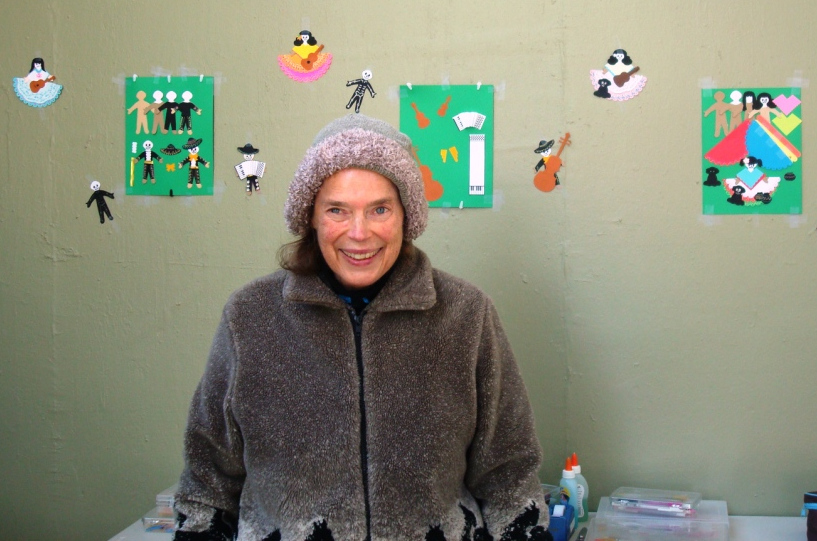

In Memory of
Robin Goodfellow
Musician, Artist, Educator, Performer, Designer, ...
1940-2017
→ Front Page
→ Mr. Powderface, Rascal Cat
---
The Early Stories
---
→ Card Game
→ Pooka, Poke, Polka
→ Three Cornered Cat
---
The Bound Stories
---
→ Loaves and Fishes
---
The Later Stories
---
→ Quite a yarn
→ Mr. Powderface Unplugged

Mr. Powderface, Rascal Cat
Loaves and Fishes
by Robin Goodfellow, 2007
Angela Belgrove